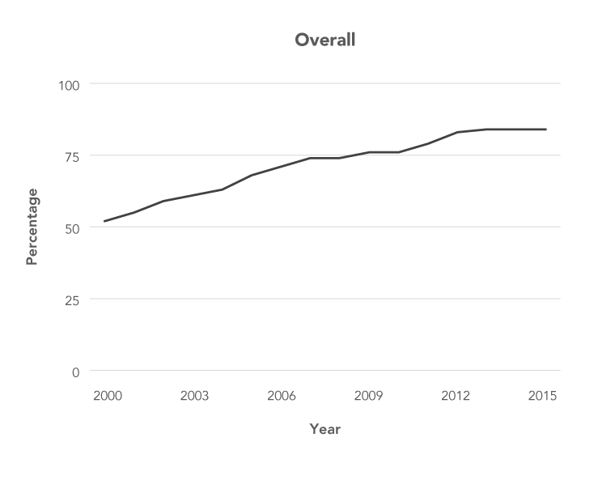
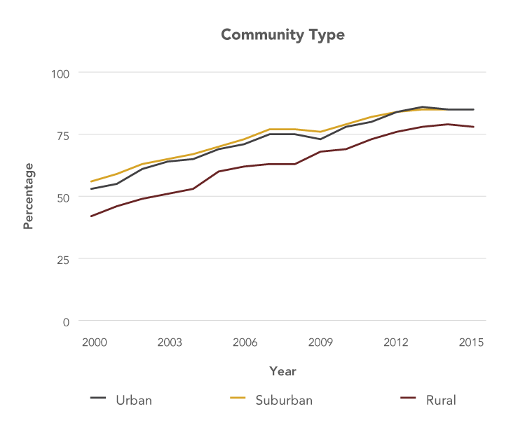

Objective 4: Facilitate health information access and sharing by ensuring adequate Internet access.
The full benefits of connected health cannot be achieved unless everyone in the United States who wants to participate and the organizations that support health and deliver healthcare have adequate access to high-speed Internet service. Access depends both on the availability of broadband service and the resources needed to obtain and maintain service.
Action Item 4.1: Support initiatives and programs to ensure that everyone in the United States has adequate Internet access if so desired.
Internet use in the United States is at a record high and continues to increase. In 2015, 84 percent of U.S. adults reported using the Internet, up from 52 percent in 2000.[1] Internet use has increased among virtually all segments of the population, although rates continue to lag among some groups, including older adults, racial/ethnic minorities, individuals with lower incomes and lower levels of education, and those living in rural settings (Figure 7).[1] Unfortunately, the disadvantages of lack of Internet access disproportionately affect populations that commonly experience worse health outcomes, including higher mortality rates for many cancers and/or less consistent access to high-quality cancer care.[2-5] Connected health tools could help these at-risk populations by linking them with the people, information, and support they need to get healthy and stay well.
Figure 7
Percentage of U.S. Adults Who Use the Internet, 2000–2015
- 
![Line graph shows steady increases in Internet use among U.S. adults in various age groups between 2000 and 2015, with younger age groups consistently reporting higher rates of Internet use. Among those 18 to 29 years old, Internet use increased from 70 percent in 2000 to 96 percent in 2015. Among those 30 to 49 years old, Internet use increased from 61 percent in 2000 to 93 percent in 2015. Among those 50 to 64 years old, Internet use increased from 46 percent in 2000 to 81 percent in 2015. Among those 65 and older, Internet use increased from 14 percent in 2000 to 58 percent in 2015.](img/Figures/Final/graphAge.png)
![Line graph shows increasing Internet use among U.S. adults in all racial/ethnic groups between 2000 and 2015. Internet use rates were highest among English-speaking Asians throughout this time period (72 percent in 2000 and 97 percent in 2014, the last year for which data are available for this population). Among non-Hispanic whites, Internet use grew from 53 percent in 2000 to 85 percent in 2015. Among Hispanics, Internet use grew from 46 percent in 2000 to 81 percent in 2015. Among non-Hispanic blacks, Internet use grew from 38 percent in 2000 to 78 percent in 2015.](img/Figures/Final/graphRace.png)
![Line graph shows increasing Internet use among U.S. adults of all household income levels between 2000 and 2015, with households with higher incomes consistently reporting higher rates of Internet use. Among households with annual incomes of at least $75,000, Internet use grew from 81 percent in 2000 to 97 percent in 2015. Among households with annual incomes between $50,000 and $74,999, Internet use increased from 72 percent in 2000 to 95 percent in 2015. Among households with annual incomes between $30,000 and $49,999, Internet use increased from 58 percent in 2000 to 85 percent in 2015. Among households with annual incomes less than $30,000, Internet use increased from 34 percent in 2000 to 74 percent in 2015.](img/Figures/Final/graphIncome.png)
![Line graph shows increasing Internet use among U.S. adults at all levels of educational attainment between 2000 and 2015, with adults with more education consistently reporting higher rates of Internet use. Among college graduates, Internet use increased from 78 percent in 2000 to 95 percent in 2015. Among adults with some college education, Internet use increased from 67 percent in 2000 to 90 percent in 2015. Among high school graduates, Internet use rates increased from 40 percent in 2000 to 76 percent in 2015. Among adults with less than a high school education, Internet use rates increased from 19 percent in 2000 to 66 percent in 2015.](img/Figures/Final/graphEducation.png)
- 
Source: Perrin A, Duggan M. Americans' Internet access: 2000-2015. Washington (DC): Pew Research Center; 2015 Jun 26. Available from: http://www.pewinternet.org/2015/06/26/americans-internet-access-2000-2015/
"Access to high-speed broadband is no longer a luxury; it is a necessity for American families, businesses, and consumers."
–President Barack Obama, Memorandum
A 2015 Pew Research Center survey found that cost was the major reason cited by most people who did not have broadband connections. About two-thirds of those who did not have a home broadband subscription indicated either the monthly service fee or the cost of a computer as a barrier to adoption.[6] Even if they could afford it, high-speed broadband service is not available to millions of Americans in their communities. The Federal Communications Commission (FCC) estimated that, as of December 2014, 10 percent of the U.S. population—approximately 34 million people—lived in places in which high-speed broadband Internet service was not available.[7]* Although Internet service is unavailable in some urban areas, rural populations are far more likely to lack adequate Internet access. More than 39 percent of Americans living in rural areas lack access to high-speed Internet compared with 4 percent of those living in urban areas. Survey data indicate that even with regular Internet access, rural residents are less likely than their urban counterparts to manage their personal health information online or email their doctors.[8]
The President’s Cancer Panel unequivocally supports the long-term goal of President Obama set forth in FCC’s 2010 National Broadband Plan that everyone in the United States should have affordable access to robust broadband service and the means and skills necessary to subscribe if they so choose.[9] Given the central role of the Internet in modern society, access to the Internet should be viewed as a right, not a privilege.[10] The Internet should be regarded as a utility. With the mandate for EHRs, access to online tools, such as patient portals, is necessary for patients to receive information from and communicate with healthcare providers. Universal Internet access could help engage medically underserved populations and overcome disparities in health and other areas.
There has been encouraging progress in expanding Internet access in recent years. Since 2009, investments from the federal government have led to the deployment or upgrading of well over 100,000 miles of network infrastructure, and 45 million additional Americans have adopted broadband.[11] Several federal agencies and public-private initiatives continue to expand broadband access by providing support for broadband planning, public access, adoption, deployment, and digital literacy (Box 2).
Sponsored Data
Companies and organizations can partner with mobile phone carriers to make their content available free of charge to customers. When customers access the sponsored data, also called zero-rated data, it does not count toward their monthly data allotments.
However, more work is needed to overcome the barriers to broadband access that persist for many. Federal agencies, Internet service providers, other private-sector entrepreneurs, and nonprofit organizations should continue to facilitate access to broadband Internet services at speeds adequate to support individuals’ participation in connected health. Sponsored data can make it easier for individuals with limited data plans—including many from medically underserved populations—to access high-quality health information and personal health data online (see Sponsored Data). However, even if the barriers of access and availability are overcome, it is critical that navigation and content are provided in a manner consistent with the culture, language, and communication skills of potential users.
Sponsored Data
Companies and organizations can partner with mobile phone carriers to make their content available free of charge to customers. When customers access the sponsored data, also called zero-rated data, it does not count toward their monthly data allotments.
Box 2
Programs and Initiatives Focused on Increasing Internet Access
-
Connect2HealthFCC
The Connect2HealthFCC Task Force was created by FCC Chairman Tom Wheeler to explore ways to accelerate the adoption of healthcare technologies by leveraging broadband and other next-generation communications services. The long-term goal is to help make broadband networks work for everyone, from those living in rural and remote areas to those in underserved inner cities. The Task Force will work to expedite this vital shift by identifying regulatory barriers and incentives and building stronger partnerships with stakeholders in the areas of telehealth, mobile applications, and telemedicine.
Source: Federal Communications Commission. Connect2HealthFCC [Internet]. Washington (DC): FCC; [updated 2015 Oct 26; cited 2016 Jan 26]. Available from: https://www.fcc.gov/about-fcc/fcc-initiatives/connect2healthfcc
-
BroadbandUSA
BroadbandUSA, an initiative of the National Telecommunications and Information Administration, provides assistance to communities that want to expand their broadband capacity and promote broadband adoption. Resources include:
- BroadbandUSA: Guide to Federal Funding of Broadband Projects—listing and summaries of key federal programs that offer funding for broadband-related projects;
- Introduction to Effective Public-Private Resources—overview of common broadband partnerships and factors communities should consider when developing partnerships.
Sources: National Telecommunications and Information Administration. BroadbandUSA: connecting America's communities [Internet]. Washington (DC): NTIA; [cited 2016 Oct 3]. Available from: http://www2.ntia.doc.gov/; National Telecommunications and Information Administration. BroadbandUSA: guide to federal funding of broadband projects. Washington (DC): U.S. Department of Commerce; 2015 Sep. Available from: https://www.ntia.doc.gov/files/ntia/publications/broadband_fed_funding_guide.pdf; National Telecommunications and Information Administration. BroadbandUSA: an introduction to effective public-private partnerships for broadband investments. Washington (DC): NTIA; 2015 Jan. Available from: http://www2.ntia.doc.gov/files/ntia_ppp_010515.pdf
-
ConnectHome
ConnectHome is a public-private initiative focused on increasing home Internet access for over 275,000 low-income households. Launched in 2015, ConnectHome brings together the Department of Housing and Urban Development, nonprofit organizations EveryoneOn and US Ignite, and several for-profit Internet service providers to provide free or low-cost broadband, technical assistance, devices, and/or digital literacy training to families living in public and assisted housing across America.
Source: The White House Office of the Press Secretary. ConnectHome: coming together to ensure digital opportunity for all Americans [Fact Sheet] [Internet]. Washington (DC): the White House; 2015 Jul 15 [cited 2016 Jan 25]. Available from: https://www.whitehouse.gov/the-press-office/2015/07/15/fact-sheet-connecthome-coming-together-ensure-digital-opportunity-all
-
Lifeline
The FCC telephone subsidy program Lifeline was expanded in March 2016 to support Internet access for low-income Americans. Eligible households soon will be able to apply their monthly Lifeline subsidy to broadband service or bundled voice and data service packages.
Source: Federal Communications Commission. Lifeline support for affordable communications [Internet]. Washington (DC): FCC; 2016 Aug 17 [cited 2016 Sep 8]. Available from: https://www.fcc.gov/consumers/guides/lifeline-support-affordable-communications
Connect2HealthFCC
The Connect2HealthFCC Task Force was created by FCC Chairman Tom Wheeler to explore ways to accelerate the adoption of healthcare technologies by leveraging broadband and other next-generation communications services. The long-term goal is to help make broadband networks work for everyone, from those living in rural and remote areas to those in underserved inner cities. The Task Force will work to expedite this vital shift by identifying regulatory barriers and incentives and building stronger partnerships with stakeholders in the areas of telehealth, mobile applications, and telemedicine.
Source: Federal Communications Commission. Connect2HealthFCC [Internet]. Washington (DC): FCC; [updated 2015 Oct 26; cited 2016 Jan 26]. Available from: https://www.fcc.gov/about-fcc/fcc-initiatives/connect2healthfcc
BroadbandUSA
BroadbandUSA, an initiative of the National Telecommunications and Information Administration, provides assistance to communities that want to expand their broadband capacity and promote broadband adoption. Resources include:
- BroadbandUSA: Guide to Federal Funding of Broadband Projects—listing and summaries of key federal programs that offer funding for broadband-related projects;
- Introduction to Effective Public-Private Resources—overview of common broadband partnerships and factors communities should consider when developing partnerships.
Sources: National Telecommunications and Information Administration. BroadbandUSA: connecting America's communities [Internet]. Washington (DC): NTIA; [cited 2016 Oct 3]. Available from: http://www2.ntia.doc.gov/; National Telecommunications and Information Administration. BroadbandUSA: guide to federal funding of broadband projects. Washington (DC): U.S. Department of Commerce; 2015 Sep. Available from: https://www.ntia.doc.gov/files/ntia/publications/broadband_fed_funding_guide.pdf; National Telecommunications and Information Administration. BroadbandUSA: an introduction to effective public-private partnerships for broadband investments. Washington (DC): NTIA; 2015 Jan. Available from: http://www2.ntia.doc.gov/files/ntia_ppp_010515.pdf
ConnectHome
ConnectHome is a public-private initiative focused on increasing home Internet access for over 275,000 low-income households. Launched in 2015, ConnectHome brings together the Department of Housing and Urban Development, nonprofit organizations EveryoneOn and US Ignite, and several for-profit Internet service providers to provide free or low-cost broadband, technical assistance, devices, and/or digital literacy training to families living in public and assisted housing across America.
Source: The White House Office of the Press Secretary. ConnectHome: coming together to ensure digital opportunity for all Americans [Fact Sheet] [Internet]. Washington (DC): the White House; 2015 Jul 15 [cited 2016 Jan 25]. Available from: https://www.whitehouse.gov/the-press-office/2015/07/15/fact-sheet-connecthome-coming-together-ensure-digital-opportunity-all
Lifeline
The FCC telephone subsidy program Lifeline was expanded in March 2016 to support Internet access for low-income Americans. Eligible households soon will be able to apply their monthly Lifeline subsidy to broadband service or bundled voice and data service packages.
Source: Federal Communications Commission. Lifeline support for affordable communications [Internet]. Washington (DC): FCC; 2016 Aug 17 [cited 2016 Sep 8]. Available from: https://www.fcc.gov/consumers/guides/lifeline-support-affordable-communications
Action Item 4.2: Support initiatives and programs to ensure adequate Internet access for all healthcare providers and organizations.
Healthcare providers and systems must have robust broadband access to optimize connectivity to each other and to the individuals and communities they serve. The need for high-speed broadband will only grow as telemedicine gains traction and increasing quantities of health-related data—including large imaging, pathology, and genomic data files—are collected and shared. Broadband connectivity is particularly challenging for healthcare organizations in rural settings, posing barriers to wider use of telemedicine in these communities. There often are limited broadband options in rural settings, and those available may be prohibitively expensive. An analysis by the FCC found that Dedicated Internet Access options, which guarantee access to the bandwidth needed for larger healthcare organizations, are as much as three times more expensive in rural areas than in urban areas.[9] Furthermore, high-speed mass-market broadband options, which FCC estimates could meet the needs of offices with four or fewer clinicians, are not even available in some rural areas.[9]
Subsidies for broadband access for public and nonprofit rural healthcare providers are available through FCC’s Rural Health Care Program,[12] and some support also is available through other federal programs and initiatives.[13] This support should continue. In addition, federal, state, local, and private-sector stakeholders should work together to ensure that all healthcare providers and organizations have access to the Internet at speeds that allow them to communicate and exchange data with other institutions and patients.
Footnotes
* Based on the definition of broadband as 25 Mbps download speeds and 3 Mbps upload speeds adopted by the Federal Communications Commission in its 2015 broadband progress report.
References
- Perrin A, Duggan M. Americans' Internet access: 2000-2015. Washington (DC): Pew Research Center; 2015 Jun 26. Available from: http://www.pewinternet.org/2015/06/26/americans-internet-access-2000-2015/
- O'Keefe EB, Meltzer JP, Bethea TN. Health disparities and cancer: racial disparities in cancer mortality in the United States, 2000-2010. Front Public Health. 2015;3:51. Available from: http://www.ncbi.nlm.nih.gov/pubmed/25932459
- Charlton M, Schlichting J, Chioreso C, Ward M, Vikas P. Challenges of rural cancer care in the United States. Oncology (Williston Park). 2015;29(9):633-40. Available from: http://www.ncbi.nlm.nih.gov/pubmed/26384798
- Albano JD, Ward E, Jemal A, Anderson R, Cokkinides VE, Murray T, et al. Cancer mortality in the United States by education level and race. J Natl Cancer Inst. 2007;99(18):1384-94. Available from: http://www.ncbi.nlm.nih.gov/pubmed/17848670
- Federal Communications Commission. Mapping broadband health in America [Internet]. Washington (DC): FCC; [cited 2016 Sep 24]. Available from: https://www.fcc.gov/health/maps
- Horrigan JB, Duggan M. Home broadband 2015. Washington (DC): Pew Research Center; 2015 Dec 21. Available from: http://www.pewinternet.org/2015/12/21/home-broadband-2015/
- Federal Communications Commission. 2016 broadband progress report. Washington (DC): FCC; 2016 Jan 29. Available from: https://www.fcc.gov/reports-research/reports/broadband-progress-reports/2016-broadband-progress-report
-
Haney D, Greenberg AJ, Blake KD, Moser RP, Hesse BW. Differences in access to and use of electronic personal health information between rural and urban residents. Presented at: Concordium 2016: Data and Knowledge Transforming Health; 2016 Sep 13; Crystal City, VA. Available from: https://academyhealth.confex.com/academyhealth/2016concordium/meetingapp.cgi/
Paper/13188 - Federal Communications Commission. Connecting America: the National Broadband Plan. Washington (DC): FCC; 2010 Mar. Available from: http://www.broadband.gov/download-plan/
- United Nations Human Rights Council. The promotion, protection and enjoyment of human rights on the Internet. New York (NY): United Nations General Assembly; 2016 Jun 27. Available from: https://www.article19.org/data/files/Internet_Statement_Adopted.pdf
- The White House. Connecting America: what high-speed Internet means in the 21st century [Internet]. Washington (DC): the White House; [cited 2016 Jan 25]. Available from: https://www.whitehouse.gov/connect-america
- Federal Communications Commission. Rural Health Care Program [Internet]. Washington (DC): FCC; [updated 2016 Jul 14; cited 2016 Jul 15]. Available from: https://www.fcc.gov/general/rural-health-care-program
- National Telecommunications and Information Administration. BroadbandUSA: guide to federal funding of broadband projects. Washington (DC): U.S. Department of Commerce; 2015 Sep. Available from: https://www.ntia.doc.gov/files/ntia/publications/broadband_fed_funding_guide.pdf